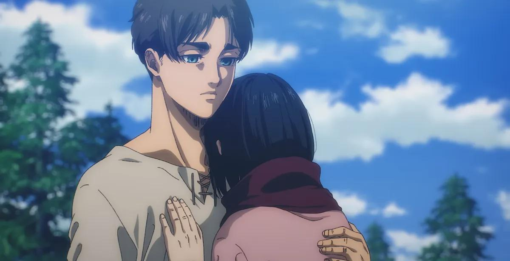
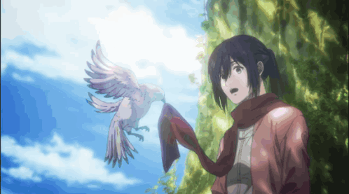
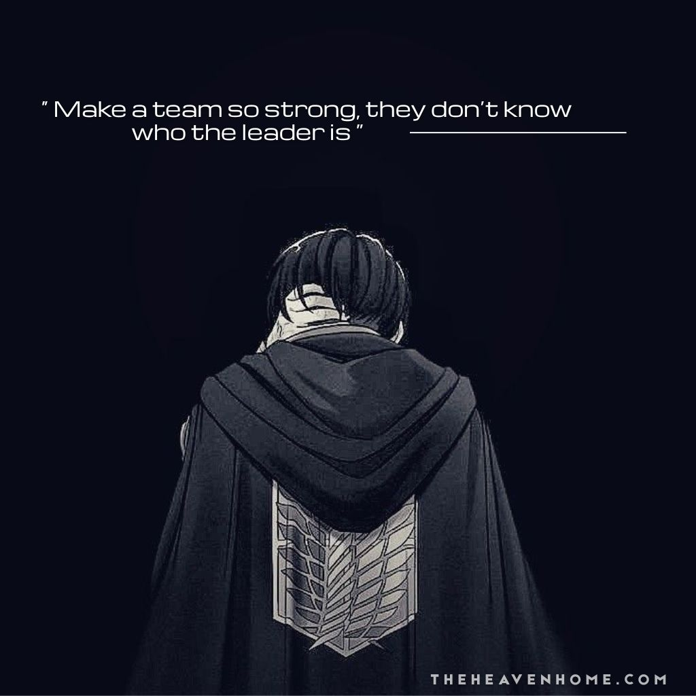

Humanity's Final Battle
Attack On Titan
The legendary anime that changed modern storytelling forever.
Titans roam outside the walls. Humanity fights for survival. Secrets unfold, friendships break, and war changes everything.
About The Anime
Dark Fantasy
Attack on Titan mixes mystery, action, horror, and emotional storytelling into one unforgettable experience.
Global Impact
One of the most influential anime series ever created with fans from every corner of the world.
Masterpiece OST
Iconic music and breathtaking animation made every battle feel legendary.
Main Characters

Eren Yeager
The boy who swore to destroy every titan.

Mikasa Ackerman
Humanity's strongest and Eren's protector.

Levi Ackerman
The fearless captain feared by titans.
Journey Through Seasons
The fall of Wall Maria begins the story.
Hidden titan identities shake the world.
The truth about the world is finally revealed.
War, freedom, and destiny collide.